Greenland and Antarctic mass balances for doubled CO2 from a simple, low-resolution GCM
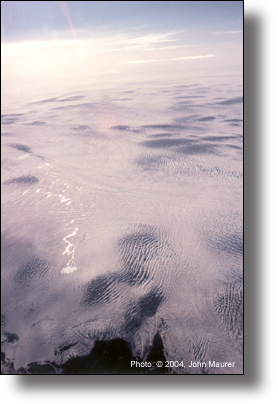
Aerial photograph of the Greenland ice sheet near Kangerlussuaq in 2004.John Maurer and Thomas N. Chase
This paper was written as part of a graduate course ("Climate Systems Modeling") taught by Professor Thomas N. Chase in the Department of Geography at the University of Colorado at Boulder.
March, 2006
The mass balances of the Greenland and Antarctic ice sheets are important because of their potential contribution to global sea level. Doubled atmospheric CO2 and a seasonally sea ice-free Arctic ocean are predicted to occur within the latter half of this century, providing the possibility for both increased melt and increased accumulation on these ice sheets. This study employs the Planet Simulator, a simple, low-resolution (T21) general circulation model (GCM) developed at the University of Hamburg in Germany to simulate the present-day and future climates using a 100-year equilibrium experiment. Greenland’s net annual surface mass balance is predicted to decrease by 9.4 cm·yr-1 while Antarctica’s net annual surface mass balance is predicted to increase by 3.5 cm·yr-1. The influence on global sea level is +0.44 mm·yr-1 from Greenland and -1.16 mm·yr-1 from Antarctica for a combined sea-level decline of -0.72 mm·yr-1. This implies that 16% of the expected gain in total sea-level rise of 4.4 mm·yr-1 by 2100 will be offset by the growth of Antarctica and that the contribution to global sea-level rise from the melting of glaciers and ice caps will be negated. The use of a simple, low-resolution GCM gave surprisingly similar results to those previously published from complex, high-resolution GCMs while providing much better capabilities for assessing uncertainty and reproducibility of the model results.
Introduction • Model Description • Experimental Design • Validation • Results • Discussion • References
Due to the technical and physical difficulties involved, it is not well understood yet whether the Greenland and Antarctic ice sheets are currently shrinking or growing, let alone how these ice sheets will respond to expected climate changes in the current and coming centuries. Net losses potentially associated with global warming, however, are important to monitor because of rises in global sea level, as well as freshening of the North Atlantic that could slow or halt ocean currents that transport heat to the north. Over the past 100 years, sea level has risen by 1.0 to 2.5 mm per year (Church et al. 2001). Climate models predict that this rate will increase about two to four times over the next 100 years, mostly due to thermal expansion of the ocean but also partially a result of increased glacial melt (Church et al. 2001). Due to lack of good estimates, these predictions do not also consider significant contributions from Greenland or Antarctica, which hold the potential for 7 m and 70 m of sea-level rise, respectively.
There is evidence that Greenland and/or the relatively unstable western portion of the Antarctic ice sheet significantly melted during the most recent interglacial about 120,000 years ago when sea levels were 4 to 5.5 m higher than today (Cuffey and Marshall 2000; Mercer 1978) and may therefore be primary contributors to sea-level rise in the event of continued global warming. Current estimates based on global census data from 1990 show that 23% of the global population lives within a 100 km distance of a coastline and within 100 m elevation of sea level and is growing faster than inland populations (Small and Nicholls 2003). A high enough sea-level rise would thus impact a significant portion of the human population, with the potential to inundate many small island states, increase coastal flooding of lowland deltas prevalent across central and southeast Asia, negatively impact agricultural and human water supplies, and destroy a large proportion of coastal wetlands (Nicholls 2002).
Besides sea-level rise, runoff from increased ice sheet ablation can also impact climate through desalinization of polar oceans. If the magnitude of this freshening is great enough, it can weaken the oceanic meridional overturning cell (MOC) with the potential for abrupt climate change, transporting less heat to the Arctic (Broecker 1997; Schwartz and Randall 2003). On the other hand, a warmer atmosphere has a higher saturation point and can therefore contain more water vapor, which may lead to increased snow accumulation and, if not offset by ablation, growth of an ice sheet. Satellite radar altimetry suggests that this may have occurred, for example, on Greenland south of 72°N between 1978 and 1986 (Zwally 1989), a result also supported by the statistical-dynamical precipitation model of Bromwich et al. (1993). More recent altimetry data shows an increase of 6.4 ± 0.2 cm·yr-1 of snow accumulation in the vast interior areas of the Greenland ice sheet above 1500 meters between 1992 and 2003 (Johannessen et al. 2005).
According to the IPCC Third Assessment Report (TAR) Special Report on Emissions Scenarios (SRES), atmospheric CO2 concentration is expected to double within the next 50-100 years (Nakicenovic et al. 2000). As a result of greenhouse warming and other factors, average global surface temperatures are predicted to rise by 1.4 to 5.8°C over the period 1990 to 2100 (Cubasch et al. 2001), with an amplified warming of 4 to 7°C projected over the same time period in the Arctic due primarily to ice-albedo feedback (ACIA 2004). Global mean precipitation is predicted to rise by 3.9% (1.3 to 6.8%; SRES A2 scenario) due to increased water vapor storage in a warmer atmosphere, with regional variability leading to precipitation decreases or drought in some areas (Cubasch et al. 2001).
Results from previous double-CO2 GCM studies focusing on the ice sheets (described below) have predicted a mass loss of the Greenland ice sheet and an accompanying mass gain for the Antarctic ice sheet. The resulting sea-level contributions from these ice sheets, then, (i.e. sea-level gain from Greenland and sea-level decline from Antarctica) effectively cancel each other out in most of these studies, supporting the future sea-level projections of the IPCC TAR, which ignore any significant contribution from the ice sheets (Church et al. 2001). Greenland and Antarctica can be expected to behave differently in the face of global warming because of Greenland’s relatively lower (i.e. warmer) latitude and proximity to other land masses. Snow accumulation has been alternately predicted to increase or decrease over the Greenland ice sheet in a double-CO2 environment: changes in accumulation can be caused by shifts in synoptic-scale atmospheric circulation patterns, such as the Icelandic Low that brings large amounts of precipitation to southeastern Greenland if it is shifted northerly enough, or by summer temperature increases that may bring precipitation in the form of rain instead of snow. In either case, simulated increases in ablation (snow melt) have more than offset any potential gain in accumulation so that the net surface mass balance has largely been predicted to be negative on Greenland.
Verbitsky and Oglesby (1995) employed NCAR’s CCM1 GCM, which has a coarse resolution of 4.5° latitude by 7.5° longitude, to study the effect of doubling atmospheric CO2 on ice sheet mass balances. Using the authors’ own ice sheet dynamics model coupled asynchronously to the AGCM, they ran a nine-year equilibrium experiment comparing current CO2 levels (330 ppm) to doubled-CO2 (660 ppm) to predict the thickening or thinning of Greenland and Antarctica based on diagnostic snow fall rates. Correction coefficients derived from the control run and observed mean annual accumulation were applied to the future simulation of accumulation. Their results showed less accumulation on Greenland and Antarctica, with losses especially evident in southern Greenland and the Antarctic Peninsula, with some regional gains in accumulation in places like northeastern Greenland and central East Antarctica. Though net surface mass balance cannot be derived from accumulation estimates alone, the authors conclude from the evidence that global warming does not, at least, lead to abrupt climate change and a new ice age as some have proposed (Broecker 1997; Schwartz and Randall 2003).
Ohmura et al. (1996a) and Ohmura et al. (1996b) employed ECHAM3 at a high resolution of T106 (1.1° by 1.1°) to also investigate the impact of doubling CO2 on ice sheet mass balances. In their study, ablation was modeled using an empirical relationship with surface temperature using Greenland field data at one particular site (Swiss Camp). A 5½-year equilibrium experiment was used to compare a control run with prescribed global sea surface temperatures (SST) observed from the 1980s with SST and sea ice distributions simulated by a previous transient double-CO2 experiment using a lower-resolution ECHAM1 T21 model and IPCC Scenario A for an expected doubling of CO2 at 2045 A.D. Their results show a decrease in accumulation on Greenland (-2.1 cm·yr-1) and an accompanying increase in ablation (+19.7 to +20.8 mm·yr-1) for an overall mass balance loss of -22.5 cm·yr-1. Antarctica, on the other hand, experiences an increase in accumulation (+2.3 cm·yr-1) and maintains an overall lack of ablation for an overall gain in surface mass balance of +2.3 cm·yr-1. In terms of sea-level rise, the two ice sheets effectively cancel each other out for a small gain of +0.2 mm·yr-1. The decrease in accumulation on Greenland despite the increase in moisture content in the atmosphere with global warming demonstrates the importance in shifts of atmospheric circulation in determining precipitation on Greenland.
Thompson and Pollard (1997) employ GENESIS Version 2.0.a for their experiment, at a moderate resolution of T31 (3.75° by 3.75°). Their model uses a six-layer (4.25 m depth) ice sheet model that incorporates thermodynamics, albedo, and ablation but no ice sheet dynamics; the ice sheet model also incorporates a correction for refreezing of meltwater using Pfeffer et al. (1991). Results are averaged over the last ten years of fully-equilibrated model runs comparing current CO2 levels (345 ppm) to a doubling of CO2 (690 ppm). Due to the coarseness of the model, the authors also use an elevation-based correction to improve results. Similar to Ohmura et al. (1996a) and Ohmura et al. (1996b), the model predicts that Greenland shrinks (-25 cm·yr-1) and Antarctica grows (+3 cm·yr-1) so that the overall influence on sea-level is negligible (-0.1 mm·yr-1); the only major difference being that precipitation is predicted to increase on Greenland (+12 cm·yr-1) rather than decrease, suggesting that the predicted synoptics were favorable for increased snow fall in southern Greenland.
Lastly, Wild and Ohmura (2000) follow up on their previous studies (Ohmura et al. 1996a; Ohmura et al. 1996b) using an improved version of the ECHAM GCM (ECHAM4), again at a high resolution of T106 (1.1° by 1.1°). The authors use similar methods and techniques to their previous studies except that boundary conditions are prescribed using ECHAM4 T42 instead of ECHAM1 T21 and the experiment runs are extended to ten years rather than just five. Results are similar, showing Greenland shrinking (-6.3 cm·yr-1) and Antarctica growing (+2.2 cm·yr-1) for a small change in global sea level of -0.55 mm·yr-1. This time their results show sea-level decline rather than sea-level rise, and enough to possibly balance out any potential future sea-level rise from melting of mountain glaciers. Another difference is that accumulation increases on Greenland this time (+9.2 cm·yr-1), as was shown in Thompson and Pollard (1997). The authors caution that increases in CO2 beyond a doubling could, however, initiate ablation on Antarctica that could potentially reverse the pattern and accelerate global sea-level rise.
In addition to doubled atmospheric CO2, the next 50-100 years are also expected to have reduced sea ice in the Arctic ocean, which the current study also takes into consideration by using the Planet Simulator’s thermodynamic sea ice model. Trend analysis using passive microwave remote sensing data for November 1978 through December 2000 shows a –2.0 ± 0.3% per decade decline in sea ice extent and a –3.1 ± 0.3% per decade decline in sea ice area (Comiso et al. 2003). More recently, September 2005 set a new record minimum sea ice extent since November 1978, and the past four years have each had sea ice extents roughly 20% less than the 1978-2000 average (Fetterer and Knowles 2005). A decrease in sea ice means that more of the relatively dark ocean is left bare, which absorbs more heat from solar radiation than would otherwise occur with a highly reflective sea ice cover: sea ice reflects ~70% of the sun’s energy back into space while the bare ocean only reflects ~10%, absorbing the remaining 90%. Also, without sea ice acting as an effective insulator between the relatively warm ocean and the atmosphere, more heat and moisture is transferred into the atmosphere, leading to higher temperatures and increased precipitation. Other studies have modeled or predicted a seasonally sea ice-free Arctic ocean in the summer in the next 50-100 years (ACIA 2004; Johannessen et al. 2004; Overpeck et al. 2005).
Li et al. (2005) employed NCAR’s CCM3 AGCM to simulate reduced North Atlantic sea ice cover and warmer SST. Their results show that surface temperatures increase by 7°C around the Greenland Summit with an accompanying 50-100% increase in average accumulation on the Greenland ice sheet, indicating the potential for abrupt warming from reduced sea ice cover due to negative ice-albedo feedback over the ocean and increased heat and moisture fluxes between the ocean and atmosphere similar to the Dansgaard-Oeschger (D-O) events recorded in Greenland ice cores during the last glacial period.
The current study simulates the impact of both doubled-CO2 and reduced Arctic sea ice on the mass balances of Greenland and Antarctica using the low-resolution Planet Simulator GCM. Other studies have shown the need for higher-resolution models to accurately reproduce ice sheet accumulation, due mostly to steep coastal elevation inclines not captured well in lower-resolution models (Genthon et al. 1994; Glover 1999; Ohmura et al. 1996a). The sensitivity study of Glover (1999) shows that 0.7° by 0.7° is the optimum resolution for modeling ice sheets, which is even slightly higher than the modeling results of Ohmura et al. (1996a, 1996b) and Wild and Ohmura (2000) at T106 (1.1° by 1.1°). On the other hand, however, the downside to using high-resolution models is the long computation time and resulting low number of years used in such experiments (e.g. 5-10 years at T106), increasing the uncertainty present in such studies due to potentially insufficient averaging out of low-frequency variability inherent to nonlinear climate models and the inability to perform multiple realizations. The low resolution of the Planet Simulator decreases the necessary computation time, thereby allowing many more years to be simulated (100 years), decreasing the chance of reporting spurious results, and allowing an assessment of how reproducible the results are.
Others have argued for the need to construct a spectrum of models that range from the simple to the complex if we want to more fully understand the climate system and our most comprehensive models (Claussen et al. 2002; Held 2005; Shackley et al. 1998). Complex, high-resolution GCMs may successfully reproduce Earth's climate system in many cases, but this does not necessarily lead to greater scientific understanding of the climate system if the models themselves are too complex to grasp the underlying physical properties that have led to the results. The current study provides results from a simple, low-resolution GCM that agree surprisingly well with the most complex, high-resolution GCMs currently available while providing much better capabilities for assessing uncertainty and reproducibility, thus helping to close the gap in the spectrum of climate system models assessing the role of ice sheets on global sea level.
2.1. Large-scale Precipitation
2.2. Convective Precipitation
2.3. Snow Fall
2.4. Evaporation (Sublimation)
2.5. Snow Melt (Ablation)
2.6. Sea IceThe Planet Simulator is a low-complexity GCM developed at the University of Hamburg that is relatively user-friendly, speedy, and also freely available online (http://www.mi.uni-hamburg.de/plasim) (Fraedrich et al. 2005a). Though horizontal and vertical resolution are configurable, the default of T21 and five atmospheric layers were selected for this project. A spectral resolution of T21 corresponds to a grid size of approximately 5.6° by 5.6°. Atmospheric layers use a σ coordinate system. The dynamic core of the model is based on the Portable University Model of the Atmosphere Version 2 (PUMA-2) (Fraedrich et al. 2005b). A simple mixed-layer ocean model can be used to simulate SST, or these can be prescribed by climatology. A module is also available for simulating the terrestrial biosphere using the Simulator of Biospheric Aspects (SimBA), not employed here. Other land-based parameterizations include surface temperature, soil hydrology, river transport, albedo, roughness, and evaporation efficiency for both glaciated and non-glaciated surfaces. As in most other GCMs, however, there is no simulation of ice sheet dynamics. The time step used was one hour. Diurnal and seasonal cycles of radiation were included. Below are further details regarding the model’s handling of particular variables employed in the current investigation.
2.1. Large-Scale Precipitation
Precipitation is parameterized as two prognostic quantities: large-scale precipitation, which occurs over an entire grid box, and convective precipitation, which occurs at the sub-grid scale (described below). Total precipitation, then, is the sum of these two quantities. Negative values of specific humidity (an artifact of spectral models) are reset to zero. For large-scale precipitation (Pl), supersaturated air is condensed and instantaneously falls out as precipitation (m·s-1), with no remaining storage of water in clouds, according to:
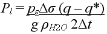
where ps is the surface pressure, Δσ is the thickness of the atmospheric layer, q is the supersaturated humidity, q* is the final computed humidity, g is the gravitational acceleration, ρH2O is the density of water, and Δt is the model time step.
Convective precipitation is parameterized according to a modified Kuo scheme (Kuo 1965; Kuo 1974) in which the lapse rates of both temperature and moisture are adjusted adiabatically at each grid point to simulate mixing within an unstable layer. Production of clouds occurs where the total moisture convergence plus the moisture supply due to surface evaporation in the column is positive. Convective precipitation (Pc) (m·s-1), then, is computed according to:
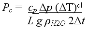
where cp is the specific heat for moist air at constant pressure, Δp is the pressure thickness of the cloud layer, (ΔT)cl is the computed cloud temperature tendency, L is latent heat, and the remaining variables are as defined in (1).
Snow is prescribed at the surface if convective or large-scale precipitation occurs when the lowest atmospheric layer is below freezing (defined as less than 273.16 K in the model). There is no phase change of precipitation as it falls through the atmosphere.
2.4. Evaporation (Sublimation)
To derive snow accumulation from the model output, we must subtract evaporation (sublimation) from precipitation (snow fall) at the surface, both prognostic quantities of the model. Evaporation, or the surface moisture flux (Fq) (m·s-1), is computed by the model according to:
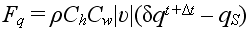
where ρ is the density of the surface medium, Ch is a coefficient for heat transfer through the medium, Cw is a wetness factor or coefficient for the evaporation efficiency of the surface medium, υ is the horizontal wind velocity of the lowermost atmospheric level, q is the specific humidity of the lowermost atmospheric level and δ is a coefficient to relate this quantity to a near-surface value, qS is the surface specific humidity, and Δt is the model time step. ρ, Ch, and Cw are given representative values in the model for soil, snow, and ice surface types.
Snow melt occurs in the model when the surface temperature is above freezing and the incoming energy balance is positive. The snow melt heat flux, Qm (W·m-2), is then computed as the maximum between two values:
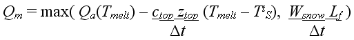
where Qa is the incoming heat flux arriving at the surface from the atmosphere, including the sensible heat flux, the latent heat flux, the net shortwave radiation, and the net longwave radiation; Tmelt is the freezing temperature, ctop is the volumetric heat capacity of the surface, ztop is the maximum surface depth for which the flux is computed (default = 0.2 m), TtS is the surface temperature computed at the previous time step, Wsnow is the mass of snow water in the total snow pack, Lf is the latent heat of fusion, and Δt is the model time step. The default value of ctop for snow is 0.6897×106 J·kg-1·K-1 using a snow density of 330 kg·m-3.
The snow melt rate, Msnow (m·s-1), is then computed from the snow melt heat flux by:
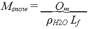
where ρH2O is the density of water and Lf is the latent heat of fusion.
Sea ice thickness, hi (m), is computed using a zero-layer Semtner thermodynamic model (Semtner 1976) from the radiative balances at the top (solar) and bottom (ocean) of the sea ice. Sea ice begins to form wherever the ocean temperature drops below the freezing point (~271.25 K, depending on the salinity) and begins to melt away wherever the temperature increases above this point. The change in sea ice thickness over time is computed according to:
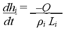
where Q is the total computed heat flux, which includes the atmospheric heat flux, the conductive heat flux through the ice, and the oceanic heat flux; ρi is the density of sea ice, assumed to be 920 kg·m-3; and Li is the latent heat of fusion of sea ice, assumed to be 3.28×105 J·kg-1. Note that this equation does not allow the sea ice to store heat.
A grid cell can either be ice-covered or ice-free but cannot be considered ice-covered until a minimum sea ice thickness of 0.1 m. Maximum sea ice thickness is also computed by the model, putting a limit on the growth of sea ice by diminishing the conductive heat flux through the ice until it balances the oceanic heat flux at some maximum thickness. Note that there is no model for sea ice dynamics in the Planet Simulator so that horizontal advection of sea ice via winds or ocean circulation is not simulated. If the sea ice module is turned off, climatological values of sea ice fraction and/or thickness can be prescribed instead.
Snow accumulation equals precipitation (snow fall) minus evaporation (sublimation). Accumulation is thereby derived from the model’s prognostic quantities of snow fall and evaporation. In following, the net surface mass balance of an ice sheet equals accumulation minus ablation. Because there is no dynamic component to the ice sheets in the model (i.e. no changes in ice velocity or rates of calving), ablation is limited to snow melt, which the model does simulate. Other authors have assumed that any dynamic response from the ice sheets would operate on longer timescales than that of a predicted doubling of CO2 in the next 50-100 years (Ohmura et al. 1996a; Ohmura et al. 1996b; Thompson and Pollard 1997). This may be an incorrect assumption, however, as more recent studies have begun to shed light on increasing ice velocities on the Greenland ice sheet (Joughin et al. 2004; Rignot and Kanagaratnam 2006; Zwally et al. 2002) and along the Antarctic Peninsula (Rignot et al. 2004; Scambos et al. 2004), suggesting the potential for faster response times from ice sheets than previously assumed. However, because there is no simulation of ice sheet dynamics in the Planet Simulator (or in most other current GCMs), this component is assumed to be zero for the purposes of the present study.
After a spin-up period of 30 years to allow the model to fully equilibrate, control and experimental simulations were each averaged over 100 years to reduce uncertainty due to low-frequency variability inherent to GCMs based on nonlinear dynamics. The control simulation was run with present-day atmospheric CO2 concentration (360 ppm) and prognostic sea surface temperature and sea ice fraction. This control is then compared against the same conditions except that atmospheric CO2 concentration is doubled to 720 ppm.
Comparisons of the control to validation (observed) data and to the doubled-CO2 experiment include averages of several variables over all grid cells containing the ice sheets. Due to the coarse resolution of the model, it is worth mentioning that the modeled averages contain some ocean areas directly adjacent to the ice sheets or miss some small fraction of coastal terrain, as can be seen in Figure 1. In total, Greenland and Antarctica are represented by 23 and 204 grid cells, respectively. Note that all subsequent figures of Planet Simulator results use interpolation to show smooth data contours. Small, saw-tooth patterns in these figures do not represent grid cells and are just an artifact of the interpolation. In the Planet Simulator results, the entire globe is represented by 2048 grid cells (64 x 32).
a)
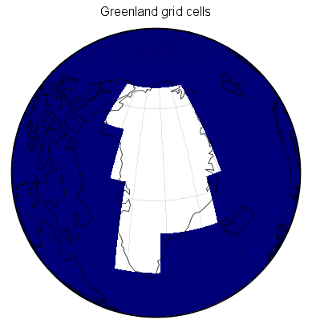
b)
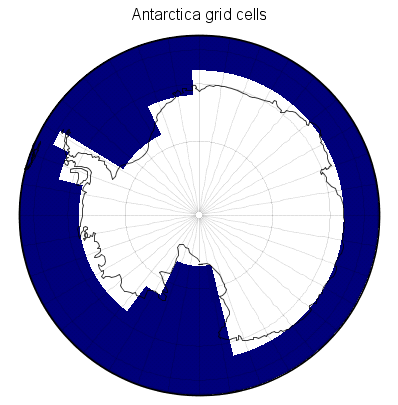
Figure 1. Planet Simulator grid cells in white covering (a.) Greenland (23 cells) and (b.) Antarctica (204 cells) for T21 horizontal resolution (5.6° by 5.6°).
The control (present-day) simulation’s average annual surface temperature on Greenland compares well to the map of compiled observations of Ohmura (1987) as shown in Figure 2. The range of temperatures in the observed map is -10 to -30°C while that of the model is -5 to -35°C, both of which show lowest temperatures in the high-elevation interior of the ice sheet and warming as elevation drops steadily toward the coasts. The area of minimum temperature is slightly displaced southerly in the model compared with the observed data, due probably to the low resolution of the model’s orography. The model does a similarly reasonable job of representing Antarctica’s average annual surface temperature, as compared to the map of compiled observations of Giovinetto et al. (1990) in Figure 3. The range of temperatures in the observed map is -10 to -60°C while the model spans between -10 and -70°C. The pattern is again well simulated, with the lowest temperatures in the interior gradually increasing toward the coasts. Again, however, the area of minimum temperature is slightly displaced, this time towards the South Pole compared to the observed data, which has the minimum occurring more towards central East Antarctica.
a)
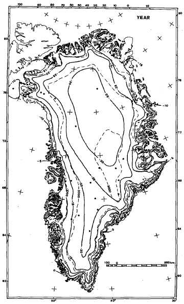
b)
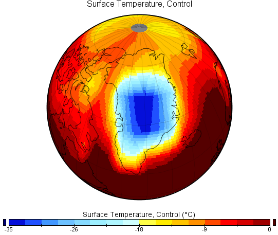
Figure 2. (a.) Observed average surface temperature (°C) on Greenland from Ohmura (1987) vs. (b.) Planet Simulator control.
a)
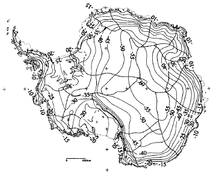
b)
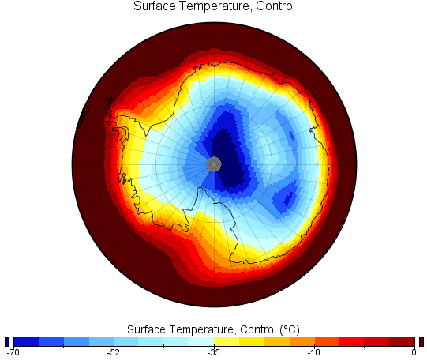
Figure 3. (a.) Observed average surface temperature (°C) on Antarctica from Giovinetto et al. (1990) vs. (b.) Planet Simulator control.Average annual accumulation on Greenland is compared to the observed compilation of Ohmura and Reeh (1991) in Figure 4 while that of Antarctica is compared to Giovinetto et al. (1990) in Figure 5. Greenland compares favorably, with the expected pattern of decreasing accumulation with increasing latitude and with a maximum observed in the southeast. The low-resolution of the model inhibits it from simulating some of the finer patterns in the observed map, including the band of higher accumulation extending along the western coast up into Melville Bay and the region of lowest accumulation in northeastern Greenland. By smoothing out the orography, the Planet Simulator also has the effect of overshooting the ice-sheet wide average (54 cm·yr-1 compared to 44 cm·yr-1, or an overestimate of 23%), common to other low-resolution GCM results (Genthon et al. 1994; Glover 1999; Ohmura et al. 1996a). The model similarly overestimates accumulation on Antarctica, this time more than two-fold (48 cm·yr-1 compared to 21 cm·yr-1). The Planet Simulator does a poorer job of representing the spatial pattern of accumulation on Antarctica as well, showing a peak of accumulation in central East Antarctica that should be a region of low accumulation and relatively low accumulation over the Antarctic Peninsula, which should exhibit some of the highest accumulation on the ice sheet. Observed accumulation maps are compiled from temporally- and spatially- sparse networks of point observations (e.g. Ohmura and Reeh (1991) is compiled from 251 snow pits and firn/ice cores collected between 1913-1989, plus 35 coastal meteorological stations from 1954-1987) and may have errors as large as 20-25%, so comparisons with the model results must also take this into consideration.
a)
b)
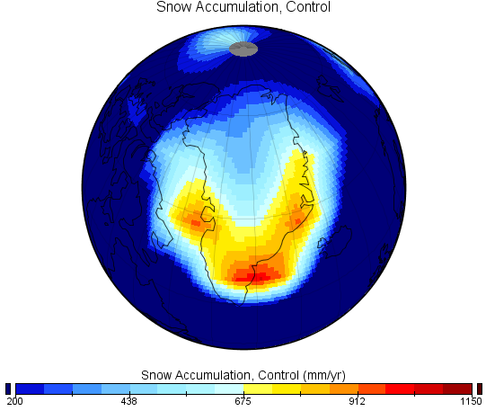
Figure 4. (a.) Observed average annual accumulation (mm·yr-1) on Greenland from Ohmura and Reeh (1991) vs. (b.) Planet Simulator control.
a)
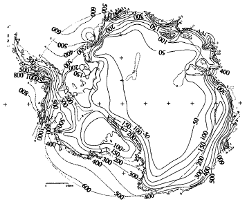
b)
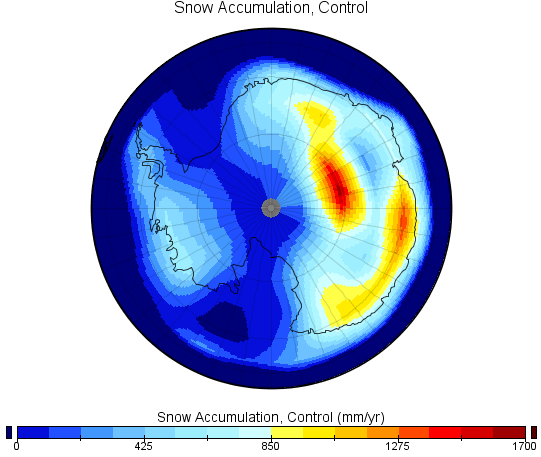
Figure 5. (a.) Observed average annual accumulation (mm·yr-1) on Antarctica from Giovinetto et al. (1990) vs. (b.) Planet Simulator control.
Figure 6 shows a comparison of average annual evaporation on Greenland in the control simulation to Box and Steffen (2001), computed from 20 automatic weather stations (AWS) spread across the ice sheet for data spanning from 1995 to mid-2000. Qualitatively, the Planet Simulator does a good job at simulating the average annual evaporation: the model predicts -3.3 cm·yr-1 while the annual average of the 20 AWS observations is -3.2 cm·yr-1. The range of values in the observed map is -10 to +2.5 cm·yr-1 while that of the model is -19 to +1.0 cm·yr-1, showing larger magnitudes of evaporation along some of the coastal regions. Positive evaporation values, representing deposition, occur in a small region surrounding the Summit in both maps while negative evaporation values dominate the ice sheet, increasing in their magnitude from the interior out toward the warmer coastal regions.
a)
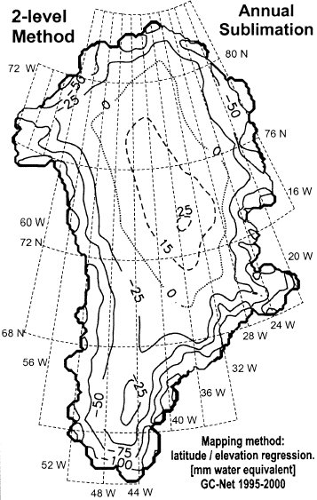
b)
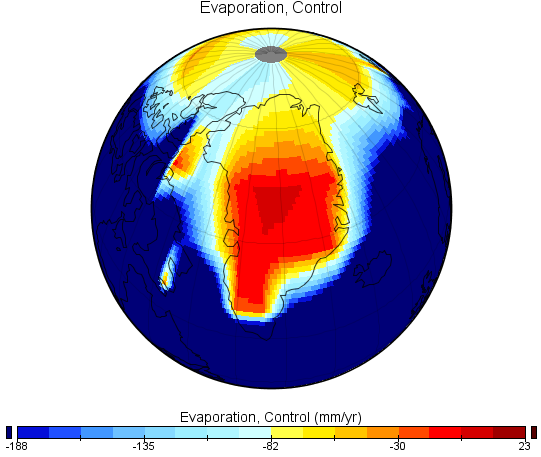
Figure 6. (a.) Observed average annual evaporation on Greenland (mm·yr-1) from Box and Steffen (2001) vs. (b.) Planet Simulator control.
Maximum annual snow melt is compared to typical summer surface melt extent on Greenland in Figure 7 using a map from Abdalati and Steffen (2001), compiled from satellite passive microwave observations. Satellite observations cannot currently measure the amount of surface melt (cm·yr-1), only its presence or absence. As can be seen in Figure 7, however, the maximum extent of surface melt simulated by Planet Simulator is ice-sheet wide, extending all the way into the interior of Greenland where melt is not usually, or ever, observed. As with the overestimation in accumulation, this too can probably be attributed to the low resolution of the model since lower than expected elevation would result in a higher likelihood of melt. However, since the simulated annual surface temperature agrees rather well with observations, this seems to suggest that there is instead something in the computation of snow melt in the model or its parameterizations that is causing this overestimation.
a)
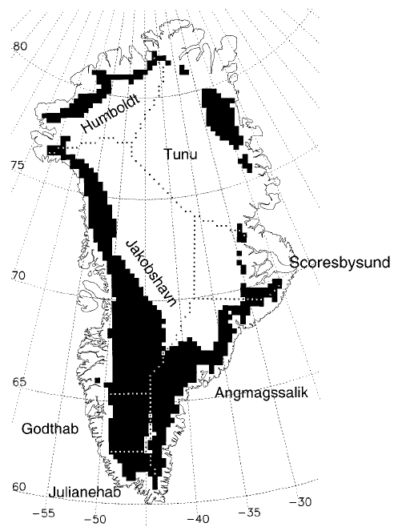
b)
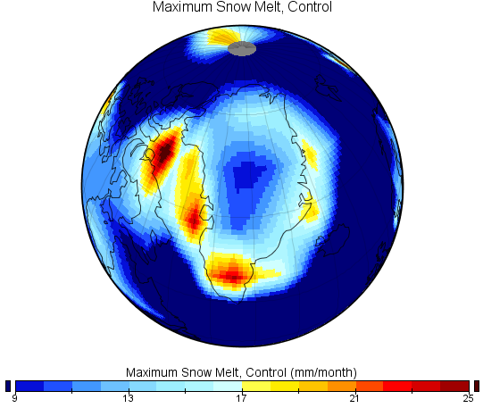
Figure 7. (a.) Observed Greenland surface melt extent for the summer of 1999 based on satellite passive microwave data from Abdalati and Steffen (2001) vs. (b.) Planet Simulator control average annual maximum melt extent (mm·month-1).
Lastly, annual net surface mass balance on Antarctica is compared with the observed compilation of Vaughan et al. (1999) in Figure 8. The observed map is compiled from 1800 published and unpublished in situ measurements, with their interpolation controlled by satellite passive microwave observations and an estimate of ±5% remaining uncertainty. Being the world’s biggest and driest desert, Antarctica does not experience many net gains except along the Peninsula and along some near-coastal locations. As with the errors in accumulation, the Planet Simulator similarly misrepresents the Peninsula and the interior regions of East Antarctica, showing too little gain over the former and too much gain over the latter.
a)
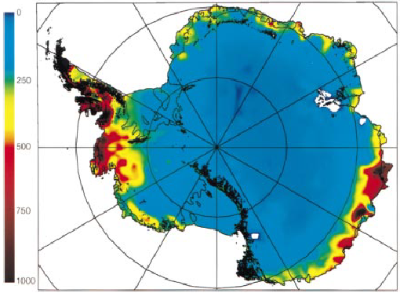
b)
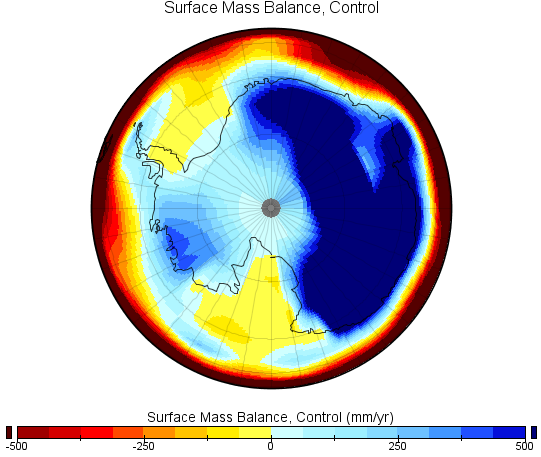
Figure 8. (a.) Observed average annual net surface mass balance (kg·m-2·yr-1) from Vaughan et al. (1999) vs. (b.) Planet Simulator control (mm·yr-1).
Overall, the control data are validated surprisingly well with the available observations, with the exception of overestimations in accumulation and some regional discrepancies, which are to be expected from a relatively low-resolution climate model.
5.1. Greenland
5.2. Antarctica
5.3. SummaryFigures plotting differences between the control and experiment simulations demonstrate areas that are statistically significant (certainty greater than 90%) using a simple student’s t-test for determining the significance of each grid cell. Because a t-test in itself is not an ideal method to test significance, we also assess the reproducibility of results with a second, independent realization of this experiment (discussed below).
The model predicts that global average surface temperature will rise by +4.1°C with a doubling of CO2, which lies somewhere in the middle of the IPCC’s predictions, which range between +1.4°C and +5.8°C (Cubasch et al. 2001). As expected, there is amplification of this warming signal at the poles due to ice-albedo feedback, mostly in the Arctic but with some regional enhancement around Antarctica surrounding the Peninsula (Figure 9). In the model, Greenland is predicted to warm by an annual average of +8.9°C (a 42% increase) while Antarctica warms slightly less by +5.4°C for a 44% increase over the control annual average. Greenland’s warming is even higher than the range predicted for the Arctic by the ACIA of +4 to +7°C (ACIA 2004).
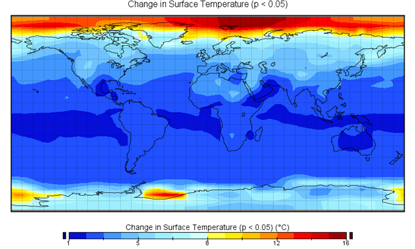
Figure 9. Change in global average surface temperature (°C) due to doubling atmospheric CO2.
Despite the warmer climate and reduced sea ice creating the potential for increased atmospheric moisture and therefore increased precipitation, average annual snow fall on the Greenland ice sheet does not show a substantial change (+0.5 mm·yr-1), but the results have a wide range of +10.0 cm·yr-1 in northern Greenland steadily declining to -30.0 cm·yr-1 in the south (Figure 10). The reduction of precipitation over southern and southeastern Greenland, where there is traditionally a maximum, as well as in the North Atlantic regions spanning towards Iceland are opposite to what one would expect and what several other models have predicted, given the synoptic-scale atmospheric circulation that brings many cyclones to this region. Similarly, it is somewhat unexpected for northern Greenland to experience such large increases in accumulation, though this does also occur in the CCM1 study of Verbitsky and Oglesby (1995). As previously noted in the validation section, such deficiencies can probably be attributed to the low resolution of the model.
a)
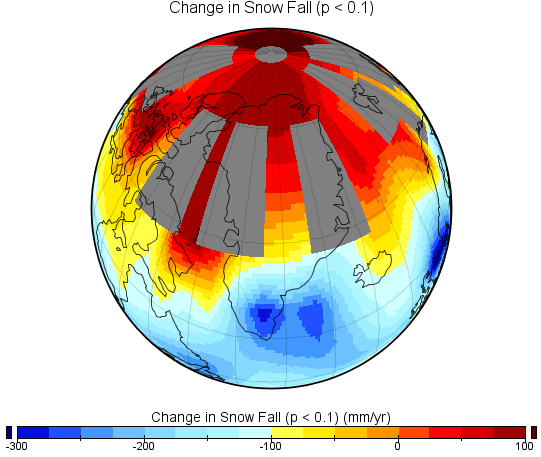
b)
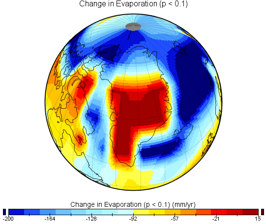
Figure 10. Changes in Greenland average annual (a.) snow fall (mm·yr-1) and (b.) evaporation (mm·yr-1) due to doubling atmospheric CO2. Insignificant results (p < 0.1) are grayed out.
While average annual snow fall does not change substantially for the entire ice sheet, average annual evaporation does, increasing by -6.3 cm·yr-1 and tripling the control average of -3.3 cm·yr-1. As shown in Figure 10, there are regions in the interior where evaporation decreases by up to +1.5 cm·yr-1, but this steadily increases to -9.2 cm·yr-1 along the warmer coastal regions and reaches as high as -20.0 cm·yr-1 in northern Greenland, where the model also predicts the highest increases in average annual surface temperature (+13°C) (not shown).
The combination of little-to-no change in snow fall with increased evaporation leads to an overall decrease in annual average accumulation of -6.2 cm·yr-1 (Figure 11). Compared to the average annual snow accumulation of 53.8 cm·yr-1 in the control data, this represents a reduction of 11.5%. Although a more modest decrease in accumulation of -2.1 cm·yr-1 on Greenland has been previously modeled using ECHAM3 (Ohmura et al. 1996a; Ohmura et al. 1996b), the authors attribute this to southerly displacement of the Icelandic Low, not apparent in the present study. One alternative hypothesis is that the precipitation falling on Greenland in the model may be precipitating more frequently as rain rather than snow, which remains to be investigated.
a)
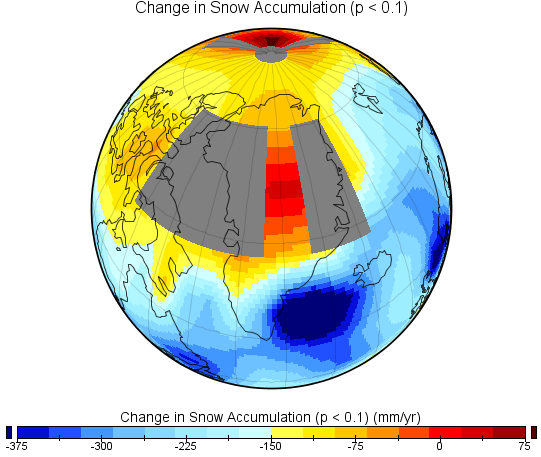
b)
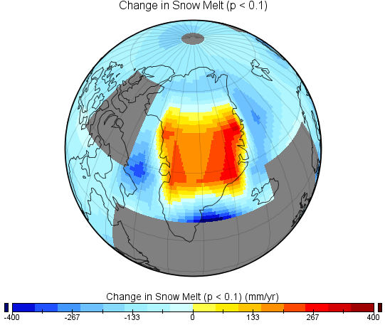
Figure 11. Changes in Greenland annual average (a.) accumulation (mm·yr-1) and (b.) snow melt (mm·yr-1) due to doubling atmospheric CO2. Insignificant results (p < 0.1) are grayed out.
Average annual snow melt increases over the ice sheet by +3.2 cm·yr-1, representing an increase of 9.2% over the control average of 34.6 cm·yr-1. The range is large, however, as shown in Figure 11, with increases spread throughout the entire central part of Greenland as high as +40 cm·yr-1 along the eastern coast and decreases in both northern and southern Greenland as much as -15 to -40.0 cm·yr-1. As noted in the validation section, melt would not be expected to reach the colder, high-elevation regions of Greenland’s interior and are probably an artifact of the model’s low resolution. It is difficult to explain the decrease in snow melt along the relatively warm southern and southeastern regions of the island, and it is worth noting that this region also experiences decreases in average annual accumulation in the model.
The combination of decreased accumulation and increased melt leads to a net loss in Greenland’s annual average surface mass balance of -9.4 cm·yr-1, a large decrease of 49% from the control average of 19.2 cm·yr-1. As shown in Figure 12, the only net gains occur in northern Greenland, reaching as high as +1.4 cm·yr-1, while net losses occur elsewhere, most prominently along the eastern coast where losses are as much as -40 cm·yr-1. Most of southern Greenland and portions of the east coast, however, are not statistically significant. The resulting contribution to global sea level from the simulated change in average surface mass balance is a slight gain of +0.44 mm·yr-1 when multiplying the result by the area of Greenland (1.68×106 km2) and dividing by the area of the entire ocean (361.6×106 km2).
a)
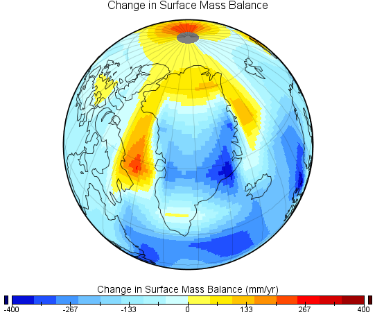
b)
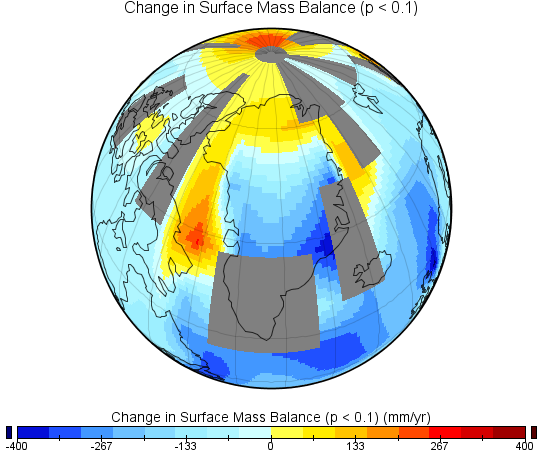
Figure 12. Changes in Greenland annual average net surface mass balance (mm·yr-1) due to doubling atmospheric CO2: (a.) all results and (b.) with insignificant results (p < 0.1) grayed out.
While there is no substantial change in snow fall on Greenland with a doubling of CO2, snow on Antarctica is predicted to increase by +5.8 cm·yr-1 (Figure 13). This is an increase of 12% over the control annual average of 48.9 cm·yr-1. Note that this increase is substantially higher than the IPCC’s predicted global mean precipitation rise of 3.9% (Cubasch et al. 2001). Regionally, snow fall on Antarctica varies between no change centered around the South Pole and reaching as high as +22.5 cm·yr-1 in the interior of East Antarctica. As in previous results, however, the model seems to have difficulty reproducing reasonable values over the Antarctic Peninsula and over central parts of Eastern Antarctica, probably due to its low resolution and the fact that it displaces the minimum surface temperature towards the South Pole. One would expect high increases in precipitation over the more northerly-extended Peninsula, but the model instead predicts no change or less snow. Conversely, large increases of up to +22.5 cm·yr-1 are predicted on the dry plateau of central East Antarctica where little to no change would be expected. However, these anomalies corroborate the CCM1 results of Verbitsky and Oglesby (1995).
a)
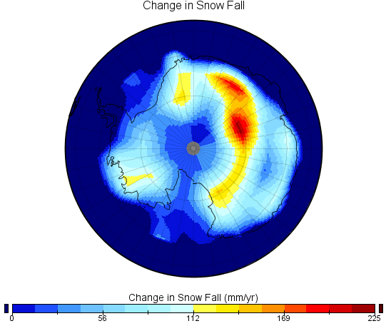
b)
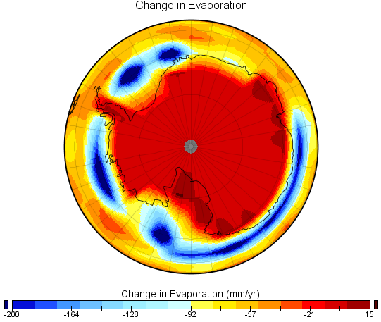
c)
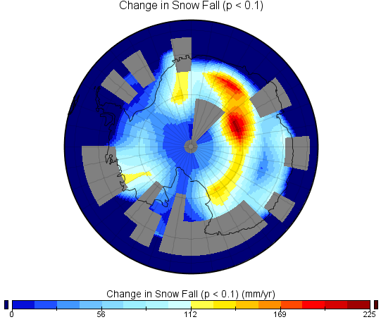
d)
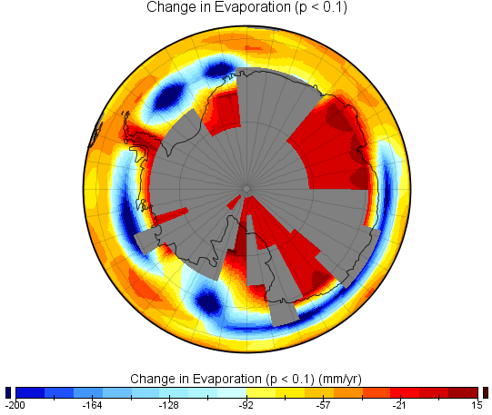
Figure 13. Changes in Antarctica average annual (a., c.) snow fall (mm·yr-1) and (b., d.) evaporation (mm·yr-1) due to doubling atmospheric CO2. Insignificant results (p < 0.1) are grayed out in (c.) and (d.) but not in (a.) and (b.).
While snow fall increases on Antarctica, doubling of CO2 and the resulting warmer climate also results in an increase of evaporation, as one would expect (Figure 13). Average annual evaporation increases by -0.53 cm·yr-1, or 31% over the control average of -1.7 cm·yr-1, ranging between decreases of +1.5 cm·yr-1 and increases as high as -9.2 cm·yr-1 over the coastal regions whereas the vast majority of the ice sheet sees a moderate increase of -2.1 cm·yr-1 (though much of this is statistically insignificant).
So, the increase in snow fall is slightly offset by the increase in evaporation on Antarctica for an average annual increase in accumulation of +5.3 cm·yr-1 (Figure 14). This is an increase of 11% over the control average of 47.7 cm·yr-1. As with the spatial pattern in snow fall, there is lower than expected change over the Antarctic Peninsula (a decrease in accumulation of -18 cm·yr-1) and higher than expected change over the interior of East Antarctica (+25 cm·yr-1).
a)
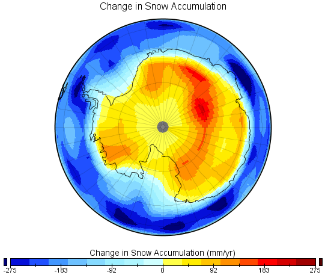
b)
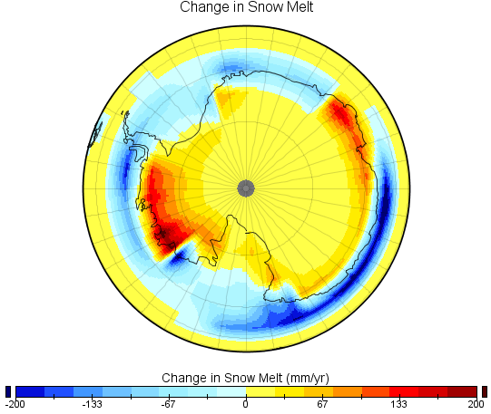
c)
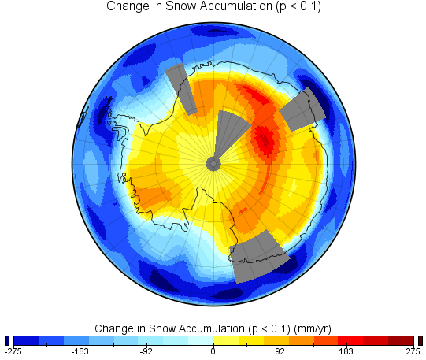
d)
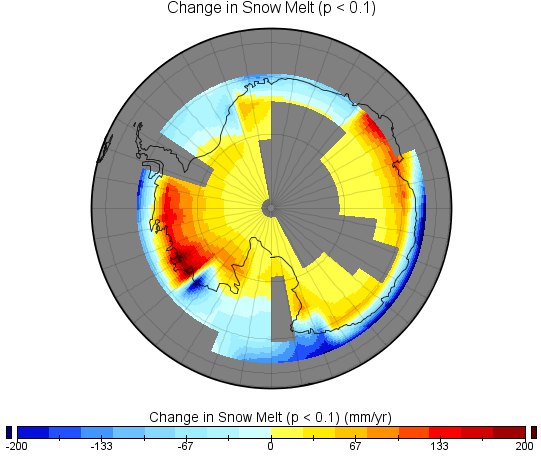
Figure 14. Changes in Antarctica annual average (a., c.) accumulation (mm·yr-1) and (b., d.) ablation (mm·yr-1) due to doubling atmospheric CO2. Insignificant results (p < 0.1) are grayed out in (c.) and (d.) but not in (a.) and (b.).
Increased temperatures from doubled-CO2 also result in an increase in annual average snow melt of 5%, for a change of +1.8 cm·yr-1. As would be expected, large parts of the interior of Antarctica are not effected and have zero change, while many coastal regions have large increases in melt, reaching as high as +20 cm·yr-1 (Figure 14). Another artifact of the model’s low resolution, probably, are the coastal regions that experience less melt (as low as -20 cm·yr-1). Greenland experiences a larger relative increase in melt (9%) compared to Antarctica (5%), as would be expected based on its lower latitude and proximity to other land masses.
The result of an 11% increase in accumulation and a 5% increase in snow melt on Antarctica’s average annual net surface mass balance is an overall increase of 8% or +3.5 cm·yr-1, which ranges on the whole between ±25 cm·yr-1 (Figure 15). The resulting contribution to global sea level from this growth of the Antarctic ice sheet is a decline of -1.16 mm·yr-1 when multiplying the result by the area of Antarctica (11.97×106 km2) and dividing by the area of the entire ocean (361.6×106 km2).
a)
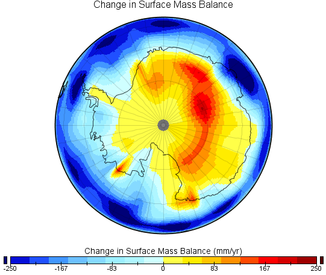
b)
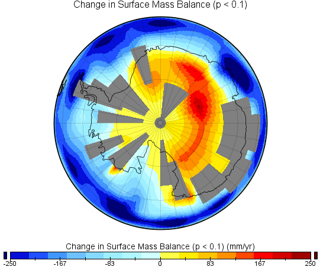
Figure 15. Changes in Antarctica annual average net surface mass balance (mm·yr-1) due to doubling atmospheric CO2: (a.) all results and (b.) with insignificant results (p < 0.1) grayed out.
Table 1 summarizes the results presented in this section. The effect of doubled-CO2 on the surface mass balances of the ice sheets is that Greenland decreases on average by 49% while Antarctica increases on average by 8%. Despite the larger relative magnitude of Greenland’s change, however, the much larger area of Antarctica outweighs the influence on global sea level. Overall, Greenland contributes to a sea-level rise of +0.44 mm·yr-1 while Antarctica contributes to a sea-level decline of -1.16 mm·yr-1 for a combined decline of -0.72 mm·yr-1. Over the past 100 years, sea level has risen by 1.0 to 2.5 mm per year (Church et al. 2001). Climate models predict that this rate will increase by 2.2 to 4.4 times over the next 100 years, mostly due to thermal expansion of the ocean but also partially a result of increased glacial melt (Church et al. 2001). The results of this model suggest that as much as 16% of an average predicted sea-level rise of +4.4 mm·yr-1 would be offset by the combined effect of the ice sheets. The IPCC’s projected contribution to sea-level rise from land-ice outside of Greenland and Antarctica is 0.45 to 1.0 mm·yr-1, with an average value of +0.73 mm·yr-1 (Church et al. 2001), suggesting that the Planet Simulator’s predicted decline of -0.72 mm·yr-1 from the ice sheets is enough to negate the future impact of glaciers and ice caps on global sea-level rise at the end of the present century.
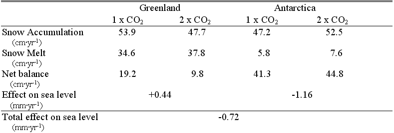
Table 1. Model average annual accumulation, ablation, and surface mass balance for Greenland and Antarctica for present-day and double-CO2. The effect on sea level from the ice sheets is also derived.To assess how reproducible the model results were, the 100-year control and doubled-CO2 experiments were rerun for comparison (with a perturbation to the initial atmospheric state, or “kick,” to create an independent realization of the experiment). All variables in both the control and doubled-CO2 model runs were spatially correlated with a linear Pearson correlation coefficient of between 0.97-0.99 (p < 0.001), indicating that the results were reproduced extremely well and therefore not attributable to model “noise.” In the second run, Greenland contributes to a sea-level rise of +0.42 mm·yr-1 (compared to +0.44 mm·yr-1 in the first run) while Antarctica contributes to a sea-level decline of -1.06 mm·yr-1 (compared to -1.16 mm·yr-1 in the first run) for a combined decline of -0.64 mm·yr-1, only 11% less than the -0.72 mm·yr-1 sea-level decline predicted in the first run. This assessment of uncertainty provides confidence in the Planet Simulator results not reported or easily attainable in previously published studies using more computationally expensive high-resolution and complex GCMs.
Changes in ice sheet mass balance due to doubled atmospheric CO2 and reduced Arctic sea ice cover were modeled with a low-resolution global climate model. Though low resolution reduces the accuracy with which ice sheets can be modeled (Genthon et al. 1994; Glover 1999; Ohmura et al. 1996a), the resultant gain in computation speed allows the model to be run cheaply for a greater number of years, thereby fully reaching equilibrium and reducing uncertainties due to low-frequency variabilities caused by the nonlinear nature of a climate model and also allowing for an assessment of reproducibility. The control data are validated surprisingly well, given the low resolution of the model, with the exception of overestimations in accumulation and various regional discrepancies common to other low resolution model results (Genthon et al. 1994; Glover 1999; Ohmura et al. 1996a).
In summary, changes in accumulation and ablation lead to a change in average surface mass balance on Greenland of -9.4 cm·yr-1 and Antarctica of +3.5 cm·yr-1. This represents an overall decrease of 49% on Greenland and an increase of 8% on Antarctica. What contributes to such a large decrease in Greenland’s surface mass balance is the overall lack of change in snow fall combined with increases in both evaporation and snow melt. Although other modeling studies have predicted modest losses in precipitation on Greenland (Ohmura et al. 1996a; Ohmura et al. 1996b), presumably due to southerly displacement of the Icelandic Low, most studies predict an increase of precipitation (e.g. Thompson and Pollard 1997; Wild and Ohmura 2000). For Antarctica, precipitation, evaporation, and snow melt are all predicted to increase, but the larger increase in accumulation compared to snow melt leads to an overall gain in mass balance, which is similarly predicted by other GCMs (e.g. Ohmura et al. 1996a; Ohmura et al. 1996b; Thompson and Pollard 1997; Wild and Ohmura 2000).
The combined effect on global sea level due to Greenland and Antarctica predicted by the model is a decline of -0.72 mm·yr-1. Though Greenland contributes to sea-level rise, the larger area of the Antarctic ice sheet dominates the combined effect. The magnitude of the simulated sea-level decline is enough to negate the future impact of melt runoff from glaciers and ice caps on global sea-level rise at the end of the present century and decreases the total predicted global sea-level rise of +4.4 mm·yr-1 by 16%. By comparison, GENESIS V2 predicts a very modest sea-level decline of -0.1 mm·yr-1 due to the ice sheets from a doubling of CO2 (Thompson and Pollard 1997) and ECHAM4 predicts a sea-level decline of -0.55 mm·yr-1 (Wild and Ohmura 2000), putting the Planet Simulator above both of these predictions but illustrating that it compares favorably to other much more advanced and higher-resolution GCMs. Alternatively, ECHAM3 predicted a modest sea-level rise of +0.2 mm·yr-1 (Ohmura et al. 1996a; Ohmura et al. 1996b). None of these other studies included a dynamic mixed-layer ocean and prognostic sea ice fraction as did the present study.
One caveat to the results of this study are that the Planet Simulator and most other GCMs do not incorporate ice sheet dynamics, preventing them from simulating increases in ice sheet flow or rates of iceberg calving that could potentially lead to greater rates of ablation as temperatures begin to rise. Once believed to occur on timescales greater than a century, there is now evidence that ice sheet flow is substantially accelerating on Greenland’s largest outlet glacier, the Jakobshavn Isbrae (Joughin et al. 2004; Rignot and Kanagaratnam 2006; Zwally et al. 2002), and along the Antarctic Peninsula (Rignot et al. 2004; Scambos et al. 2004), presumably from basal lubrication from increased melt. There is also the caveat that if atmospheric CO2 concentrations increase beyond a doubling that Antarctica may begin to experience more substantial snow melt and possibly accelerate future global sea-level rise.
One notable feature of these results is that a simple, low-resolution GCM has been used to reach similar answers to those produced by the most complex GCMs while providing much better capabilities for assessing uncertainty and reproducibility. Even the most complex climate models have remaining difficulties simulating high-latitude environments (Randall et al. 1998) and the Planet Simulator is not obviously more deficient. This suggests that the totality of model space (simplest to most complex) can and should be explored to grasp the underlying physical properties of ice sheet mass balances.
~ end ~
Acknowledgements: The first author would like to thank David Kindig for his assistance with getting Planet Simulator installed and running. The authors would also like to thank Mark Serreze, Konrad Steffen, and Kasey Barton for constructive suggestions regarding this manuscript. Thanks also to Robert Schmunk for his development of the Panoply NetCDF Viewer that was used to generate the model output map images in this paper.
Top of Page • Introduction • Model Description • Experimental Design • Validation • Results • Discussion • References
© 2006,